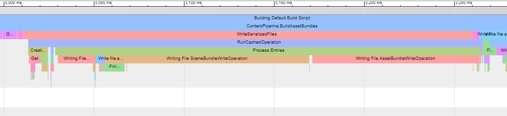

Diagnostic tools
Build layout report
The build layout report provides detailed information and statistics about your Addressables builds, including:
- Description of AssetBundles
- Sizes of each Asset and AssetBundle
- Explanation of non-explicit Assets that were pulled into AssetBundles
- AssetBundle dependencies
Because compiling the report increases build time, the build layout report is disabled by default. You can enable the report in the Addressables section of the Preferences window. Once enabled, the report is created whenever you build Addressables content. You can find the report in your project folder at Library/com.unity.addressables/buildlayout.txt.
See Building your Addressable content for more information about building content.
Build Profiling
Running an Addressables build creates a .json log file that contains build performance information. You can find the log file in your project folder at Library/com.unity.addressables/AddressablesBuildTEP.json.
View the log file by entering the chrome://tracing URL in Google Chrome.

A sample log file being displayed in chrome://tracing
See Unity Scriptable Build Pipeline for more information about build performance logging.
The Addressables Analyze tool
Analyze is a tool that gathers information on your Projects' Addressables layout. In some cases, Analyze may take appropriate actions to clean up the state of your Project. In others, Analyze is purely an informational tool that allows you to make more informed decisions about your Addressables layout.
Using Analyze
In the Editor, open the Addressables Analyze window (Window > Asset Management > Addressables > Analyze), or open it via the Addressables Groups window by clicking the Tools > Analyze button.
The Analyze window displays a list of Analyze rules, along with the following operations:
- Analyze Selected Rules
- Clear Selected Rules
- Fix Selected Rules
The analyze operation
The analyze operation is the information-gathering step of the rule. Running this action on a rule or set of rules gathers data about the build, dependency maps, and more. Each rule is responsible for gathering the desired data and reporting it back as a list of AnalyzeResult objects.
No action should be taken to modify any data or the state of the Project during the analyze step. Based on the data gathered in this step, the fix operation may be the appropriate course of action. Some rules, however, only contain an analyze step, as no reasonably appropriate and universal action can be taken based on the information gathered. Check Scene to Addressable Duplicate Dependencies and Check Resources to Addressable Duplicate Dependencies are examples of such rules.
Rules that are purely informational and contain no fix operation are categorized as Unfixable Rules. Those that do have a fix operation are categorized as Fixable Rules.
The clear step
This operation will remove any data gathered by the analysis and update the TreeView accordingly.
The fix operation
For Fixable Rules, you may choose to run the fix operation. This uses data gathered during the analyze step to perform any necessary modifications and resolve the issues.
Check Duplicate Bundle Dependencies is an example of a fixable rule, because there is a reasonably appropriate action that can be taken to resolve the issues detected in the analysis.
Provided Analyze rules
Fixable rules
Check Duplicate Bundle Dependencies
This rule checks for potentially duplicated assets, by scanning all groups with BundledAssetGroupSchemas and projecting the asset group layout. This essentially requires triggering a full build, so this check is time-consuming and performance-intensive.
Issues: Duplicated assets result from assets in different groups sharing dependencies, for example two Prefabs that share a material existing in different Addressable groups. That material (and any of its dependencies) would be pulled into both groups containing the Prefabs. To prevent this, the material must be marked as Addressable, either with one of the Prefabs, or in its own space, thereby putting the material and its dependencies in a separate Addressable group.
Resolution: If this check discovers any issues, running the fix operation on this rule creates a new Addressable group in which to move all dependent assets.
Exceptions: If you have an asset containing multiple objects, it is possible for different groups to only pull in portions of the asset, and not actually duplicate. An FBX with many meshes is an example of this. If one mesh is in "GroupA" and another is in "GroupB", this rule will think that the FBX is shared, and extract it into its own group if you run the fix operation. In this edge case, running the fix operation is actually harmful, as neither group would have the full FBX asset.
Also note that duplicate assets may not always be an issue. If assets will never be requested by the same set of users (for example, region-specific assets), then duplicate dependencies may be desired, or at least inconsequential. Each Project is unique, so fixing duplicate asset dependencies should be evaluated on a case by case basis.
Unfixable rules
Check Resources to Addressable Duplicate Dependencies
This rule detects if any assets or asset dependencies are duplicated between built Addressable data and assets residing in a Resources folder.
Issues: These duplications mean that data will be included in both the application build and the Addressables build.
Resolution: This rule is unfixable, because no appropriate action exists. It is purely informational, alerting you to the redundancy. You must decide how to proceed and what action to take, if any. One example of a possible manual fix is to move the offending asset(s) out of the Resources folder, and make them Addressable.
Check Scene to Addressable Duplicate Dependencies
This rule detects any assets or asset dependencies that are shared between the Scenes in the Editor Scene list and Addressables.
Issues: These duplications mean that data will be included in both the application build and the Addressables build.
Resolution: It is purely informational, alerting you to the redundancy. You must decide how to proceed and what action to take, if any. One example of a possible manual fix is to pull the built-in Scene(s) with duplicated references out of Build Settings and make it an Addressable Scene.
Build Bundle Layout
This rule will show how assets explicitly marked as Addressable will be laid out in the Addressable build. Given these explicit assets, we also show what assets are implicitly referenced by, and therefore will be pulled into, the build.
Data gathered by this rule does not indicate any particular issues. It is purely informational.
Extending Analyze
Each unique Project may require additional Analyze rules beyond what comes pre-packaged. The Addressable Assets System allows you to create your own custom rule classes.
AnalyzeRule objects
Create a new child class of the AnalyzeRule class, overriding the following properties:
CanFixtells Analyze if the rule is deemed fixable or not.ruleNameis the display name you'll see for this rule in the Analyze window.
You'll also need to override the following methods, which are detailed below:
List<AnalyzeResult> RefreshAnalysis(AddressableAssetSettings settings)void FixIssues(AddressableAssetSettings settings)void ClearAnalysis()
Note: If your rule is designated unfixable, you don't have to override the FixIssues method.
RefreshAnalysis
This is your analyze operation. In this method, perform any calculations you'd like and cache any data you might need for a potential fix. The return value is a List<AnalyzeResult> list. After you'd gathered your data, create a new AnalyzeResult for each entry in your analysis, containing the data as a string for the first parameter and a MessageType for the second (to optionally designate the message type as a warning or error). Return the list of objects you create.
If you need to make child elements in the TreeView for a particular AnalyzeResult object, you can delineate the parent item and any children with kDelimiter. Include the delimiter between the parent and child items.
FixIssues
This is your fix operation. If there is an appropriate action to take in response to the analyze step, execute it here.
ClearAnalysis
This is your clear operation. Any data you cached in the analyze step can be cleaned or removed in this function. The TreeView will update to reflect the lack of data.
Adding custom rules to the GUI
A custom rule must register itself with the GUI class using AnalyzeSystem.RegisterNewRule<RuleType>(), in order to show up in the Analyze window. For example:
class MyRule : AnalyzeRule {}
[InitializeOnLoad]
class RegisterMyRule
{
static RegisterMyRule()
{
AnalyzeSystem.RegisterNewRule<MyRule>();
}
}